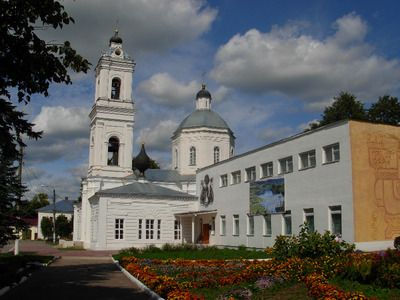
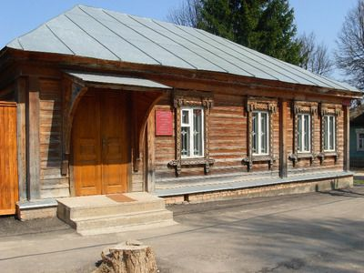
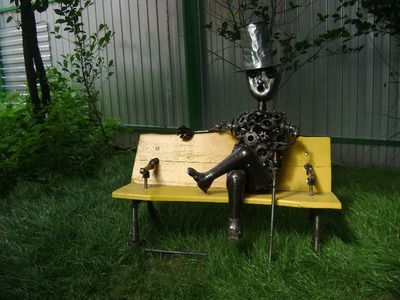
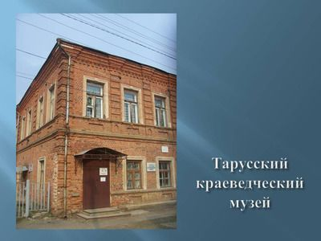
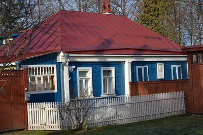

Туризм > Музеи Тарусы


Тарусская картинная галерея
ул. Ленина, 1А
тел. 2-51-83
часы работы - с 10:00 до 17:00
выходной - понедельник, вторник.
последняя пятница каждого месяца - санитарный день.
Музей семьи Цветаевых
ул. Р. Люксембург, 30
тел. 2-51-92
часы работы - с 10:00 до 17:00
выходной — понедельник
последняя пятница каждого месяца - санитарный день.
Новый музей Сергея Жарова
ул. Шмидта, 11А
тел. 8(910)600-17-36
часы работы - с 10:00 до 18:00, летом до 20:00
без выходных
Краеведческий музей
ул. Энгельса, 4
тел. 2-54-39
часы работы - с 10:00 до 17:00
выходной — понедельник
последняя пятница каждого месяца - санитарный день.
Музей К.Г. Паустовского
ул. Пролетарская, 2
тел. 2-50-70
режим работы: пятница, суббота с 11:00 до 18:00